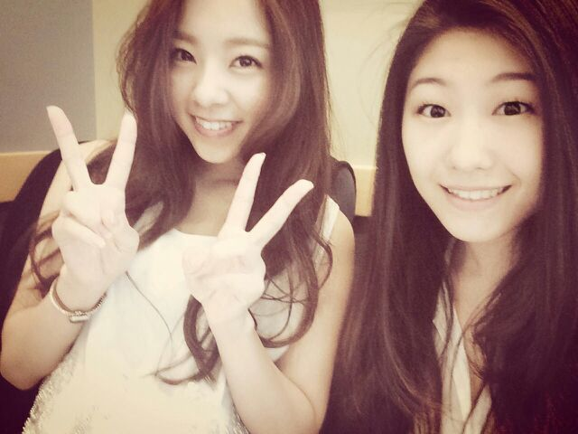

| 2014/06 24 Tue | 朝からカフェで... blogう ちます..* Rotty |
こんにちわ\ω/ まに or ろってぃ-だよ..*
そ-いや、こないだの金曜に
LUHICAと遊んできましまた

この前紹介した TSUBAKIのCMソングとなった『独り言花』や『君と踊ろう』を歌っている娘、LUHICA。
久しぶりに 誰かと渋谷でランチしたな〜..*
かなり... 楽しかったです.
意気投合した気持ち
何か 色々話してたんだけど
共通することがいっぱいあったりして
好きなアーティストが同じだったり
同じ歌を歌ってきたり、、、
他にも色々話したよ..*
乃木坂の新曲 『夏のFree & Easy』のMV撮影場所となった 『Bershka 』で洋服見たりもしたよ〜
そして、私がNOGIBINGOで『三日月』を歌ってるのもリアルタイムで見たらしいです.♪
『この娘、歌うまいな..*』と思ってくれていたみたいです.♪ びっくりだよ本当 !!!!笑
今度一緒にラオケ行く〜♪
Rotty & LUHICA
.♪

のし。
コメント(145)
2014/06/24 12:06